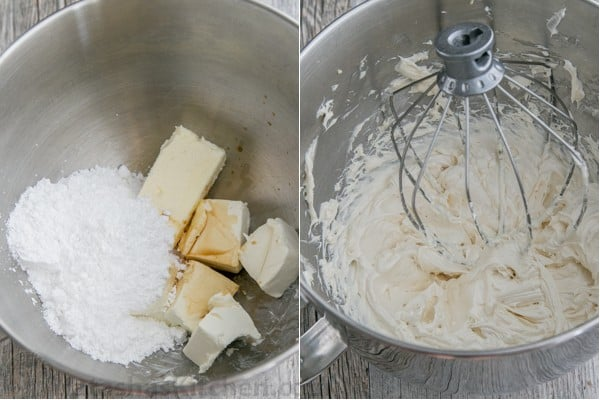

Whipped cream cheese frosting

Description
This Easy whipped cream cheese frosting is as easy as it is delicious!
Ingredients
- 1 package (8oz) Cream Cheese, room temp, cut into quarters
- 1 stick (8 Tbsp) unsalted butter butter, room temp
- 1 cup powdered sugar
- 2 tsp real vanilla extract
- Pecans to decorate, optional
Steps
- Combine all of your frosting ingredients in the bowl of a stand mixer (here’s the mixer I use) and using the whisk attachment, beat on medium speed until combined, then beat on high speed 2-3 min or until fluffy, scraping down the bowl as needed.